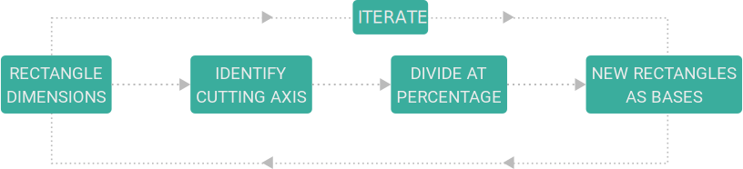
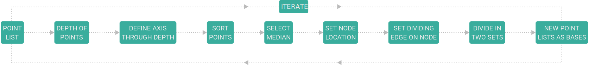
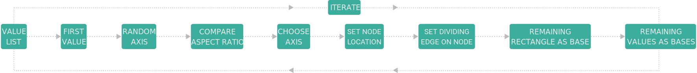

TOPOLOGICAL
GRAPHS IN
ARCHITECTURE
INTRODUCTION
PRELIMINARIES
GRAPH THEORY
TOPOLOGY
SIMULATION

SYNTHETIC
DATASET
GENERATION
SPACE
PARTITIONING
PARAMETRIC
FRAMEWORK
ARCHITECTURAL
RULES
POST-
PROCESSING
GRAPH
MACHINE
LEARNING
GRAPH
NEURAL
NETWORKS
CLASSIFICATION
REGRESSION
OUTCOME
DATASET
RESULTS
CONCLUSION
DISCUSSION